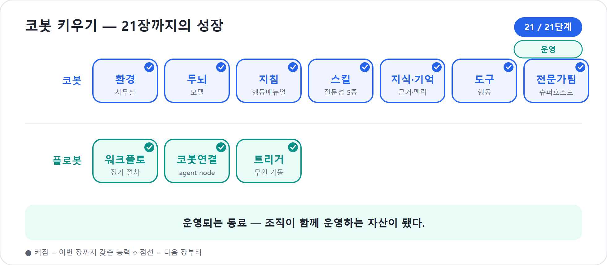

21장. 가드레일·거버넌스·비용, 그리고 ALM — 안전하게 운영하고 조직으로 키운다
코봇은 이제 무대에 올랐고, 우리는 20장에서 그 일하는 모습을 데이터로 보았다. 마지막으로 남은 일은 코봇이 오래, 안전하게, 예측 가능한 비용 안에서 일하도록 운영 체계를 세우는 것이다. 잘 키운 신입이라도 출입증과 권한 등급, 행동 강령 없이 사내를 돌아다니게 두지는 않는다.
이 장에서는 코봇의 안전장치(가드레일·보안·거버넌스)를 갖추고, 가장 오해가 많은 주제 — 무엇이 비용을 만드는가 — 를 바로잡는다. 그리고 그 끝에서, 한 사람이 돌보던 코봇을 조직이 함께 운영하는 자산으로 키우는 ALM(Application Lifecycle Management)까지 나아가며 이 책을 닫는다.
먼저 보는 비용의 큰 그림
- 코봇 비용은 기본적으로 사용량 기준이며, Copilot Credits는 메시지·응답·작업 사용량을 따라간다.
- Workflows는 실행 액션에 따라 용량을 쓴다.
- 모델 셀렉터를 바꾸는 행위 자체는 과금 이벤트가 아니다. 비용은 실제 모델 사용량, 추론, 도구 호출에서 나온다.
- BYOM(Azure AI Foundry 등)은 별도 과금이므로 예산과 모니터링을 따로 본다.
2026년 기준 주의
이 장은 Copilot Studio의 새 에이전트 경험 기준이다. 클래식 토픽, 옛 agent flows, 별도 AI 프롬프트를 신버전 기능처럼 설명하지 않는다. Workflows는 공개 미리보기이며, 새 경험과 클래식 경험은 공존하지만 서로 마이그레이션할 수 없다. 세부 과금·한도·관리 화면은 바뀔 수 있으므로 공식 라이선스 가이드와 Power Platform 관리센터를 최종 기준으로 삼아야 한다.
무엇을 답하게 할 것인가 — 가드레일
첫 번째 손잡이는 코봇이 무엇을 답하게 할 것인가다. 가드레일은 단순한 욕설 필터가 아니다. 코봇이 지켜야 할 범위, 금지해야 할 행위, 근거가 없을 때의 태도, 민감한 질문을 만났을 때의 대응까지 포함한다.
가드레일은 세 겹으로 생각하면 쉽다.
| 겹 | 무엇을 막나 | 어디에 쓰나 |
|---|---|---|
| 지침 가드레일 | 역할 밖 답변, 추측, 과장 | 8장 지침, 9장 Skill |
| 보안 가드레일 | 권한 없는 데이터 접근, 익명 사용 | 인증, 공유, 사용자 권한 |
| 플랫폼 가드레일 | 위험한 커넥터, 채널, 트리거 | DLP, 관리센터, 환경 정책 |
첫 겹은 우리가 이미 여러 번 써온 문장이다. “모르면 지어내지 말고 모른다고 말하라.” “인사·법무·재무의 확정 판단은 담당자 검토를 요청하라.” 이런 문장은 코봇의 예의가 아니라 운영 통제다.
둘째 겹은 보안이다. 코봇이 사용자보다 더 많이 보거나 더 많이 실행하면 안 된다. 셋째 겹은 플랫폼이다. Copilot Studio와 Power Platform은 DLP, 환경, 감사 로그, 민감도 라벨, 데이터 거주성 같은 관리 장치를 제공한다.
현장에서
지침은 필요하지만 충분하지 않다. 정말 막아야 하는 것은 DLP와 권한으로 막아야 한다. 신입에게 “기밀 문서를 보지 마”라고 교육하는 것과, 애초에 출입 권한을 주지 않는 것은 다르다.
누가 쓸 수 있는가 — 인증과 권한
두 번째는 인증이다. 코봇으로 들어오는 문에 자물쇠를 다는 일이다. Copilot Studio의 인증 선택지는 크게 셋으로 정리된다.
| 인증 방식 | 의미 | 어울리는 경우 | 주의점 |
|---|---|---|---|
| No authentication | 링크가 있으면 누구나 대화 | 공개 안내, 민감 정보 없음 | 사내 데이터·도구에는 위험 |
| Authenticate with Microsoft | Microsoft Entra ID 기반 인증 | Teams, Microsoft 365 Copilot 내부 에이전트 | 조직 정책과 공유 권한 확인 |
| Authenticate manually | Entra ID 또는 OAuth2 수동 구성 | 다른 채널에서 인증 필요 | 설정 변경 후 게시 필요 |
공식 문서는 새 에이전트가 기본적으로 Microsoft 인증 옵션을 켜는 방향을 설명한다. Teams, Power Apps, Microsoft 365 Copilot에서는 Entra ID(Microsoft 조직 로그인 체계(옛 Azure AD)) 인증을 자연스럽게 활용할 수 있다. 사내 프로젝트 코봇이라면 이것이 기본값에 가깝다.
반대로 No authentication은 조심해야 한다. 링크만 있으면 누구나 코봇과 대화할 수 있고, 공유로 조직 안의 특정 사용자만 제한하는 통제도 어려워질 수 있다. 내부 자료나 도구에 닿는 코봇에는 맞지 않는다.
인증이 “누가 들어오는가”라면, 권한과 데이터 경계는 “들어와서 무엇까지 보는가”다.
코봇은 자기를 부른 사용자의 권한을 넘어선 것을 보여주어서는 안 된다.
예를 들어 팀원 A는 예산 폴더를 볼 권한이 없고, 팀장 B는 볼 권한이 있다. 두 사람이 같은 코봇에게 “워크숍 예산 알려줘”라고 물었을 때, 코봇은 같은 답을 해서는 안 된다. A에게는 접근할 수 없다고 말하거나 권한 요청 절차를 안내해야 하고, B에게는 근거 파일을 바탕으로 답해야 한다.
도구도 마찬가지다. 승인 요청을 보내는 Workflow, 메일을 발송하는 도구, 외부 API를 호출하는 커넥터가 누구의 자격 증명으로 실행되는지 문서화해야 한다. 사용자 자격 증명은 추적성이 좋고, 환경 수준 연결은 운영이 쉽지만 권한 범위가 넓어질 수 있다.
코봇 한마디
"저는 부른 사람의 권한 안에서만 움직여야 믿을 수 있는 동료가 돼요. 인증은 출입문이고, 사용자 권한은 제가 볼 수 있는 책상 위 자료의 경계입니다."
데이터가 어디로 흐르는가 — DLP와 관리
세 번째는 데이터 손실 방지(Data Loss Prevention, DLP)다. DLP는 코봇이 어떤 데이터와 어떤 서비스 사이를 연결할 수 있는지 정하는 조직의 교통 규칙이다. Copilot Studio는 Power Platform 위에서 움직이므로 Power Platform 관리센터의 데이터 정책과 함께 관리된다.
공식 보안·거버넌스 문서는 Copilot Studio의 데이터 정책으로 사용자 인증 요구, 지식 소스 제한, Power Platform 커넥터 도구 제한, HTTP 요청 차단, Skill 제한, 특정 채널 게시 차단, 이벤트 트리거 제한을 할 수 있다고 설명한다. 코봇이 스스로 판단하고 도구를 부를수록 조직은 더 분명한 울타리를 세워야 한다.
| 통제 대상 | 왜 중요한가 | 예시 |
|---|---|---|
| 인증 없는 채팅 | 링크만으로 내부 코봇 접근 가능 | No authentication 차단 |
| 지식 소스 | 민감 자료·공개 웹 혼용 위험 | 공용 웹 지식 금지, SharePoint 제한 |
| 도구/커넥터 | 외부 시스템으로 데이터 유출 가능 | HTTP, 특정 SaaS 커넥터 차단 |
| Skill | 검증되지 않은 업무 매뉴얼 확산 | 승인된 Skill만 사용 |
| 채널 | 예상 밖 공개 경로 생성 | Direct Line, Facebook 게시 제한 |
| 이벤트 트리거 | 사람 없이 자동 실행·용량 소비 | 특정 자동 트리거 제한 |
팁
DLP는 사고 뒤 급하게 켜는 장치가 아니다. 파일럿을 시작할 때부터 “어떤 채널을 허용할 것인가”, “어떤 지식 소스를 막을 것인가”, “HTTP 호출은 누가 승인할 것인가”를 정한다.
감사와 책임 — 누가 무엇을 바꿨는가
운영되는 코봇에는 책임자가 있어야 한다. 누가 지침을 바꿨는지, 누가 새 도구를 붙였는지, 누가 게시했는지, 언제부터 오류가 늘었는지 알아야 한다.
Copilot Studio의 보안·거버넌스 문서는 Microsoft Purview의 메이커 감사 로그, Microsoft Sentinel을 통한 활동 모니터링과 알림, 에이전트 런타임 보호 상태, 게시 전 보안 경고 같은 통제 항목을 소개한다. 입문서 독자가 모든 도구를 당장 설정할 필요는 없지만 방향은 알아야 한다. 코봇은 “누가 만들었는지 모르는 자동응답기”가 아니라 조직의 업무 시스템이다.
| 역할 | 책임 | 예시 |
|---|---|---|
| 비즈니스 오너 | 목적과 업무 범위 결정 | 프로젝트 운영팀장 |
| 메이커 오너 | 지침·Skill·지식·도구 품질 관리 | 코봇 제작 담당 |
| 플랫폼 관리자 | 환경·DLP·보안·용량 관리 | Power Platform 관리자 |
| 운영 분석자 | Monitor·Analytics·대화 기록 분석 | PMO 담당 |
작은 팀에서는 한 사람이 여러 모자를 쓸 수 있다. 그래도 모자를 구분해야 책임이 흐려지지 않는다.
이런 통제는 점점 중앙에서 한눈에 보는 방향으로 모이고 있다. 지금까지는 메이커가 코봇마다 따로 울타리를 세웠다면, 앞으로는 조직 차원의 거버넌스가 더 또렷한 도구를 갖춘다. 어떤 커넥터를 쓸 수 있는지 미리 정해 두는 허용 목록(allow-list) 방식, 관리자가 위험한 설정을 한 곳에서 잡아 주는 관리 작업(admin actions), 그리고 “우리 조직에서 외부 웹을 지식으로 쓰는 코봇이 몇 개인가” 같은 질문에 자연어로 답하는 거버넌스 질의가 그런 흐름이다. 보안을 사고 뒤에 점검하는 대신 게시 전으로 앞당기는(shift-left) 발상도 같은 방향이다. 메이커 입장에서 중요한 것은 도구 이름이 아니라 태도다. 울타리는 나중에 치는 장식이 아니라, 처음부터 설계의 일부다.
무엇이 비용을 만드는가
마지막은 비용이다. 여기에는 현장에서 가장 끈질긴 오해가 있다.
먼저 큰 그림이다. 코봇의 비용은 기본적으로 사용량 기준이다. Microsoft Learn의 청구 문서는 Copilot Credits(코봇 사용량을 재는 눈금(대화·응답·작업 실행서 소비))를 에이전트 사용량을 측정하는 단위로 설명한다. 조직은 사용한 Copilot Credits의 합을 기준으로 비용을 계산하고, 구매한 용량은 테넌트 전체에서 풀로 관리된다.
새 경험에서 비용을 이해하는 핵심은 다음 세 줄이다.
- 사용자와 코봇의 메시지·응답·작업이 Copilot Credits를 소비한다.
- Workflows/에이전트 플로우 실행은 액션 단위로 용량을 소비한다.
- 모델 셀렉터를 바꾸는 행위 자체는 과금 이벤트가 아니다. 다만 실제 모델 사용량, 추론, 도구 호출, BYOM 구성은 비용과 지연에 영향을 준다.
많은 사람이 “Build에서 모델을 더 강한 것으로 바꾸면 그 순간 청구서가 오른다”고 짐작한다. 그렇게 단순하지 않다. 모델을 선택하는 버튼 자체가 비용을 만드는 것이 아니다. 비용은 실제 사용량에서 나온다. 사용자가 더 많이 묻고, 코봇이 더 긴 응답을 만들고, 더 많은 도구와 Workflows를 실행하고, 더 복잡한 추론을 수행할수록 용량 소비가 커진다.
또 하나 고쳐야 할 오해가 있다. 클래식 시절에는 “AI 프롬프트 도구가 비용 레버”라는 식의 설명이 자주 쓰였다. 그러나 이 책의 범위인 새 에이전트 경험에서는 별도 AI 프롬프트 기능을 현재 기능처럼 설명하면 안 된다. 새 경험에서 그 자리는 Skill과 Workflows의 agent node가 나누어 맡는다. 비용 감각도 “프롬프트 도구를 줄이자”가 아니라 “모델 사용량과 작업 실행을 설계하자”로 바뀌어야 한다.
| 비용을 키우는 요인 | 왜 늘어나는가 | 줄이는 설계 |
|---|---|---|
| 대화량 증가 | 사용자가 많고 세션이 많음 | 파일럿→확대 단계별 용량 계획 |
| 긴 응답과 반복 질문 | 한 번에 해결 못 해 왕복 증가 | 지침·Skill 출력 형식 개선 |
| 복잡한 추론 | 다단계 계획·긴 문맥 처리 | 중요한 업무에만 사용 |
| 도구·Workflows 실행 | 액션 호출과 단계 실행 | 불필요한 단계 제거 |
| BYOM(Azure AI Foundry 등) | 외부/자체 모델 별도 청구 | 별도 예산과 모니터링 분리 |
비용 캐논
모델 선택 버튼이 아니라 실제 사용량이 비용을 만든다. Copilot Credits는 메시지·응답·작업 사용량을 따라가고, Workflows는 실행 액션에 따라 용량을 쓴다. BYOM(Azure AI Foundry 등)은 별도 과금이다.
"제 비용은 버튼 하나가 아니라 실제로 주고받는 대화와 실행한 일에서 생겨요. 많이 쓰는 일이 큰 가치를 만들도록, 무거운 흐름은 꼭 필요한 곳에 설계해 주세요!"
비용은 줄이는 것이 아니라 설계하는 것이다
비용 관리는 무조건 덜 쓰자는 말이 아니다. 코봇이 시간을 아끼고 품질을 올린다면 비용은 투자다. 문제는 어디에 쓰는지 모르는 비용이다.
첫째, 업무 가치를 기준으로 우선순위를 나눈다. 주간 상태보고처럼 사용량이 많고 절감 효과가 큰 업무는 좋은 비용이다. 반대로 거의 쓰이지 않는 기능이 무거운 지식 검색과 Workflow를 반복한다면 정리 대상이다.
둘째, 실패 비용을 줄인다. 도구 호출이 실패하면 사용자는 다시 묻고, 코봇은 다시 시도하고, Workflow는 또 실행될 수 있다. 실패는 품질 문제이면서 비용 문제다.
셋째, 예산을 시나리오로 본다. 공식 문서는 Agent usage estimator를 통해 월간 Copilot Credits 소비를 예측할 수 있다고 안내한다. 이 도구는 확정 견적이 아니라 정보성 추정 도구다. 그래도 파일럿, 부서 확대, 전사 확대처럼 낮음·중간·높음 시나리오를 만드는 데 유용하다.
비용을 시나리오로 보면 막연함이 줄어든다. 다음은 러닝 예제 기준의 가정값이다. (영업일 22일 기준, 정보성 추정이며 실제 소비는 Agent usage estimator로 확인한다.)
| 시나리오 | 사용자 | 일 대화 | 월 대화(약) | 상대 규모 | 비용을 키우는 요소 |
|---|---|---|---|---|---|
| 파일럿 | PMO 10명 | 30 | 660 | 낮음 | 기본 대화 위주 |
| 부서 확대 | 80명 | 250 | 5,500 | 중간 | + 상태보고 Workflow 실행 액션 |
| 전사 확대 | 500명 | 1,500 | 33,000 | 높음 | + 여러 코봇·복잡한 추론·BYOM 가능 |
핵심은 절대 금액이 아니라 가치와 비용의 비교다. 예컨대 주 5회 상태보고 작성을 코봇이 도와 한 번에 약 4시간을 아낀다면, 한 사람당 월 약 20시간이 절감된다. 이 절감 가치가 그 사용량의 예상 Copilot Credits를 넘는지가 도입 판단의 기준이다. 줄일 것은 “모델 등급”이 아니라 “쓰이지 않는데 무거운 흐름”이다.
넷째, 용량 부족 시 절차를 정한다. 공식 청구 문서는 선불 용량이 부족할 때 기존 용량 재배분, 추가 Copilot Credits 구매, PAYG 설정 같은 선택지를 설명한다. “한도에 닿으면 누가 알림을 받고, 누가 예산 승인을 하는가”를 정해 두어야 한다.
다섯째, 비용을 한 화면에서 본다. 소비를 사후에 청구서로만 확인하면 늦다. Copilot Credits 소비를 코봇별·부서별·기간별로 모아 보여 주는 비용 관리 대시보드가 자라고 있다. 어떤 코봇이 용량을 가장 많이 쓰는지, 어느 주에 소비가 튀었는지, 특정 Workflow가 실행 액션을 과도하게 부르지는 않는지를 한눈에 보면, 비용은 막연한 걱정에서 관리되는 숫자로 바뀐다. 앞의 시나리오 표가 ‘예측’이라면, 대시보드는 ‘실측’이다. 둘을 나란히 놓고 예측과 실제의 간격을 좁히는 것이 운영자의 일이다.
"비용은 숨겨두면 무섭고, 펼쳐 보면 관리됩니다. 누가 얼마나 쓰는지 한 화면에서 보이면, 줄일 곳과 더 투자할 곳이 또렷해져요!"
안전을 넘어 조직 운영으로 — ALM으로 가는 길
코봇이 조직의 자산으로 자리 잡으려면, 만들고 다듬고 내보내는 사이클 자체가 여러 사람·여러 환경이 함께 굴리는 운영 체계로 커져야 한다. 그것이 ALM(Application Lifecycle Management)이다.
Power Platform의 ALM 문서는 애플리케이션 라이프사이클을 계획, 개발, 빌드와 테스트, 배포, 운영, 모니터링, 학습의 순환으로 설명한다. 이 책의 언어로 바꾸면 Create → Build → Test → Publish → Monitor의 확장판이다. ALM은 개발자 전용 주제가 아니라, 우리가 이미 해온 코봇 육성 사이클을 조직 규모로 만든 것이다.
개인 사이클에서 조직 사이클로
이 책은 줄곧 하나의 사이클을 돌려 왔다. 만든다, 다듬는다, 내보낸다, 키운다. 그것은 개인이 한 명의 동료를 키우는 사이클이었다.
이제 같은 사이클을 여러 사람이, 여러 환경에서 돌린다고 생각해 보자. 코봇 하나가 아니라 코봇과 전문가 에이전트들과 플로봇이 한 묶음으로 움직이고, 만드는 사람과 운영하는 사람과 쓰는 사람이 나뉜다. 이것이 ALM이다.
| 개인 운영 | 조직 ALM |
|---|---|
| 내 환경에서 직접 수정 | 개발 환경에서 수정 |
| 기억에 의존한 테스트 | Evaluate 테스트 세트와 승인 절차 |
| 바로 게시 | 릴리스 계획 후 운영 환경 배포 |
| 문제가 나면 손으로 복구 | 버전·솔루션·로그로 추적 |
| 한 사람이 모든 권한 보유 | 역할별 권한과 감사 로그 |
처음부터 DevOps 파이프라인을 만들 필요는 없다. 하지만 개발 환경과 운영 환경을 나누고, 코봇과 Workflows를 솔루션(코봇·도구를 한 묶음으로 싸 환경 사이로 옮기는 꾸러미)으로 묶고, 환경별 값을 분리하는 습관은 작을 때부터 들이는 편이 좋다.
조직 사이클은 한 번에 완성되지 않는다. 코봇이 쓰이는 범위가 넓어지는 만큼 운영 체계도 단계적으로 자란다. 같은 코봇이 세 번 몸집을 키운다고 생각하면 쉽다.
| 단계 | 쓰는 범위 | 지침은 누가 고치나 | 권한·업데이트 |
|---|---|---|---|
| 1단계 — 메이커 한 명 | 만든 사람과 주변 몇 명 | 메이커가 직접 | 한 사람이 모든 권한, 손으로 게시 |
| 2단계 — 팀 | PM팀·부서 단위 공유 | 메이커 오너 + 검토자 | 역할 분리 시작, dev→prod 릴리스 |
| 3단계 — 전사 | 사업부·전 조직 자산 | 거버넌스 위원회·운영 조직 | 솔루션·환경 분리, 감사 로그, 승인 게이트 |
흥미로운 것은, 거버넌스가 성장을 가로막는 규칙이 아니라 성장의 부산물로 따라온다는 점이다. 한 사람이 쓸 때는 권한 분리도 릴리스 절차도 필요 없다. 팀이 함께 쓰기 시작하면 “지침을 누가 고치고, 누가 승인하나”가 자연스레 생기고, 전사로 퍼지면 감사와 비용 관리가 따라붙는다. 코봇이 자라면서 그를 둘러싼 운영 체계도 함께 자라는 것이다. 이쯤 되면 코봇은 더 이상 당신의 코봇이 아니다. 우리 회사의 동료다.
"ALM은 어려운 개발자 용어가 아니라, 저를 혼자 키운 신입에서 조직이 함께 돌보는 동료로 만드는 성장 방식이에요. dev에서 배우고 prod에서 일하는 리듬을 갖추면 더 오래 버틸 수 있습니다."
한 묶음으로 옮긴다 — 솔루션
조직 규모로 운영하려면 흩어진 자산을 하나로 묶어 다룰 수 있어야 한다. 그 묶음의 단위가 솔루션(Solution)이다. Copilot Studio의 솔루션 문서는 에이전트를 솔루션에 넣어 여러 환경 사이로 내보내고 가져올 수 있다고 안내한다.
코봇 하나만 옮기는 것이 아니다. 코봇의 지침, 관련 구성요소, 4부에서 만든 Workflows, 커스텀 커넥터, 연결 참조, 환경 변수까지 함께 챙겨야 한다.
| 자산 | 솔루션에서 챙길 것 | 놓치면 생기는 문제 |
|---|---|---|
| 코봇 | 에이전트 본체, 지침 | 운영 환경에 코봇이 없음 |
| Workflows | 플로봇과 필요한 개체 | 도구 호출 실패 |
| 커넥터 | 커스텀 커넥터, 연결 참조 | 외부 시스템 연결 실패 |
| 환경 변수 | SharePoint URL, 승인자, 키 값 | dev 값이 prod에 남음 |
| 인증/채널 | 재설정이 필요한 항목 | 가져온 뒤 게시·공유 불가 |
공식 문서는 모든 컴포넌트와 속성이 자동으로 포함되는 것은 아니라고 말한다. 일부 지식 소스나 채널 세부 정보, 아이콘 같은 속성은 가져온 뒤 다시 확인해야 할 수 있다. 가져온 에이전트는 다시 게시해야 공유할 수 있고, 사용자 인증도 다시 구성해야 할 수 있다.
함정
솔루션에 에이전트만 넣고 끝내면 안 된다. 코봇이 부르는 Workflow, 커넥터, 환경 변수, 연결 참조가 빠지면 운영 환경에서 “본체는 있는데 손발이 없는” 상태가 된다.
개발 환경과 운영 환경 — dev에서 prod로
조직 운영의 기본은 개발과 운영을 나누는 것이다. 개발 환경(dev)에서 만들고 시험한 뒤, 충분히 검증되면 운영 환경(prod)으로 승격한다. 사용자가 실제로 쓰는 운영 환경에서 곧장 손대지 않는 것이 원칙이다.
| 환경 | 역할 | 특징 |
|---|---|---|
| dev | 만들고 실험 | 메이커 권한 넓음, 데이터는 샘플 또는 제한 |
| test/uat | 사용자 검증 | 실제 시나리오 테스트, 승인자 확인 |
| prod | 실제 운영 | 변경 통제, 최소 권한, Monitor 집중 |
환경마다 달라지는 설정은 환경 변수(Environment variable)로 분리한다. 개발용 SharePoint 경로와 운영용 경로, 시험용 결재선과 실제 결재선이 다르기 때문이다. Power Platform 문서는 환경 변수가 애플리케이션을 환경 간 이동할 때 달라지는 외부 참조를 분리해 주는 ALM 기본 장치라고 설명한다.
나쁜 예: 승인 요청은 test-approver@contoso.com 에게 보낸다.
좋은 예: ApprovalOwnerEmail 환경 변수를 사용한다.그러면 같은 솔루션을 dev에서 prod로 옮겨도 본체는 그대로 유지되고, prod 환경에서는 운영용 값만 채우면 된다.
관리자를 위한 한 걸음 더 — Copilot Studio Kit
18장의 Evaluate는 코봇 한 마리를 메이커가 직접 시험하는 내장 도구다. 그런데 조직 규모로 가면 “수십 개 코봇을 한꺼번에, 배포 때마다, 같은 기준으로” 시험해야 한다. 이때 메이커 도구만으로는 손이 모자란다. Microsoft의 CAT(Copilot Acceleration Team)가 공개·무료로 제공하는 Copilot Studio Kit은 Power Platform에 설치하는 관리자·프로개발자용 도구 묶음으로, 대규모 배치 회귀 테스트, 테넌트 전역 에이전트 인벤토리, 안티패턴 정적 분석, 파이프라인 연계 자동 테스트 같은 운영 기능을 더한다. 입문 단계에서 당장 필요하지는 않지만, 코봇이 늘고 거버넌스가 본격화되면 “Evaluate에서 Kit으로” 넓혀 간다는 방향만 기억해 두면 된다. 자세한 내용은 부록 B의 프로코드 확장과 함께 본다.
클래식과 신버전의 공존을 운영한다
조직에는 이미 클래식 Copilot Studio 에이전트가 있을 수 있다. 동시에 이 책에서 다룬 새 에이전트 경험의 코봇도 등장한다. 둘은 한동안 공존한다.
공식 비교 문서는 이 점을 분명히 한다. 새 경험은 자연어 우선, 단일 Build 표면, 향상된 오케스트레이션, Build · Preview · Evaluate · Monitor 탭을 중심으로 한다. 클래식은 토픽, 노드, 분기, 구성 가능한 오케스트레이션을 중심으로 한다. 두 경험은 선택해서 만들 수 있지만, 서로 이전할 수 없다.
따라서 운영자는 “마이그레이션 버튼을 기다리자”가 아니라 “새로 만들 것과 유지할 것을 나누자”는 전략을 세워야 한다.
| 상황 | 권장 방향 |
|---|---|
| 안정적으로 도는 클래식 에이전트 | 당장 억지로 옮기지 말고 유지 |
| 새로 만드는 지식·추론 중심 코봇 | 새 에이전트 경험으로 시작 |
| 노드 단위 결정 흐름이 핵심인 업무 | 클래식 유지 또는 Workflows 재설계 검토 |
| 조직 표준을 새로 정하는 경우 | 새 경험 기준으로 Skill·Workflows·Monitor 체계 설계 |
특히 토픽을 Skill 하나로 단순 치환하거나, 옛 AI 프롬프트를 비용 레버로 설명하는 실수를 피해야 한다.
러닝 예제 — 솔루션 하나로 dev에서 prod까지
마지막 예제는 지금까지 키운 모든 동료를 한 번에 옮긴다. 코봇과 두 전문가 에이전트(리스크 분석가·예산 담당), 그리고 플로봇 Workflows를 하나의 솔루션으로 묶는다. 이 솔루션을 개발 환경에서 충분히 시험한 뒤 운영 환경으로 이전한다.
- dev 환경에서 코봇을 수정한다.
- 11장의 도구와 4부의 Workflows가 정상 실행되는지 Preview로 확인한다.
- 18장의 Evaluate 테스트 세트를 돌린다. 20장에서 실제로 실패했던 질문도 포함한다.
- 솔루션에 코봇, 연결된 전문가 에이전트, Workflows, 커넥터, 환경 변수를 추가한다.
- prod 환경으로 가져온 뒤 운영용 환경 변수 값을 채운다.
- 인증과 채널을 다시 확인하고 게시한다.
- 프로젝트 팀 보안 그룹에 사용 권한을 준다.
- Monitor로 첫 주 운영을 관찰한다.
이렇게 하면 개인이 손으로 돌보던 프로젝트 코봇이, 팀이 함께 운영하고 버전을 관리하는 조직의 자산으로 자리 잡는다.
첫 30일과 첫 6개월 — 운영 로드맵
개념을 다 읽어도 “그래서 다음 달에 뭘 하지?”가 남는다. 처음 도입하는 팀을 위한 30일 로드맵은 이렇게 잡을 수 있다.
| 주차 | 목표 | 핵심 활동 |
|---|---|---|
| 1주 | 환경·범위 확정 | dev 환경 생성, DLP 기본 정책, 파일럿 범위와 성공 지표 합의 |
| 2주 | 코봇 구축·검증 | 지침·Skill·지식·도구 구성, Evaluate 첫 테스트 세트 작성 |
| 3주 | 제한 배포 | 파일럿 보안그룹에만 공유, Monitor 관찰, 실패 대화를 회귀 테스트로 |
| 4주 | 솔루션화·승격 준비 | 솔루션으로 묶기, 환경 변수 분리, prod 게시 리허설, 운영 역할 확정 |
파일럿이 자리 잡은 뒤에는 정해진 리듬으로 돌린다.
| 주기 | 활동 | 담당 |
|---|---|---|
| 매일·매주 | Monitor 지표와 실패 대화 확인, 회귀 테스트 추가 | 운영 분석자 |
| 격주 | 지침·Skill 보강을 dev→prod로 릴리스 | 메이커 오너 |
| 매월 | 비용·용량 점검, DLP·권한 감사 | 플랫폼 관리자 |
| 분기 | 범위 확대 결정, Learn 변경·미리보기 GA 반영 | 비즈니스 오너 |
이 리듬이 있으면 20장의 Monitor가 단발 관찰이 아니라 매주 무엇을 고칠지로 이어진다. 예를 들어 Monitor에서 “예산 질문의 절반이 되묻기로 끝난다”가 보이면, 격주 릴리스에서 예산 Skill의 출력 형식을 고치고, 그 질문을 Evaluate 회귀 세트에 넣는다.
운영되는 동료를 위한 마지막 체크리스트
[코봇 운영 전 최종 점검]
1. 범위: 할 일과 하지 않을 일이 지침에 쓰였는가?
2. 인증: 내부용 코봇에 적절한 인증이 적용됐는가?
3. 공유: 사용자·메이커·분석자 권한이 분리됐는가?
4. 데이터: 지식 소스가 최신이고 사용자 권한을 존중하는가?
5. 도구: 누가 어떤 자격 증명으로 실행하는지 문서화됐는가?
6. DLP: 위험한 커넥터·채널·트리거가 정책으로 통제되는가?
7. 비용: 예상 Copilot Credits와 Workflow 실행량을 보았는가?
8. ALM: dev/prod, 솔루션, 환경 변수, 게시 절차가 정해졌는가?
9. Monitor: 배포 후 확인 리듬과 담당자가 정해졌는가?
10. 회귀: Monitor 실패 사례가 Evaluate 테스트로 들어가는가?핵심 정리
| # | 요점 |
|---|---|
| 1 | 가드레일은 지침, 보안, 플랫폼 정책의 세 겹으로 세운다. |
| 2 | 내부 코봇은 Microsoft 인증과 사용자 단위 권한을 기본으로 검토한다. |
| 3 | DLP는 지식 소스, 도구, HTTP, Skill, 채널, 트리거를 조직 정책 안에서 통제한다. |
| 4 | 비용은 사용량 기준 Copilot Credits와 Workflows 실행 액션 용량으로 본다. 모델 셀렉터 변경 자체는 과금 이벤트가 아니다. |
| 5 | 신버전에는 별도 AI 프롬프트 기능을 현재 비용 레버처럼 쓰지 않는다. Skill과 agent node 중심으로 설계한다. BYOM은 별도 과금이다. |
| 6 | ALM은 Create → Build → Test → Publish → Monitor 사이클을 조직 규모로 키운 것이다. |
| 7 | 솔루션으로 코봇·전문가 에이전트·Workflows·연결·환경 변수를 묶고, dev에서 prod로 승격한다. |
| 8 | 새 경험과 클래식은 공존하지만 서로 마이그레이션할 수 없다. |
자주 묻는 질문(FAQ)
| 질문 | 답변 |
|---|---|
| 모델을 센 걸로 바꾸면 청구서가 바로 늘까? | 모델 선택 버튼 자체가 과금 이벤트는 아니다. 비용은 실제 메시지, 응답, 추론, 도구와 Workflows 실행 같은 사용량에서 나온다. BYOM은 별도 과금이다. |
| AI 프롬프트를 줄이면 비용이 줄어드나요? | 이 책의 범위인 새 경험에는 별도 AI 프롬프트 기능을 현재 기능처럼 설명하지 않는다. 비용은 모델 사용량, 작업 실행, Workflows 액션 중심으로 본다. |
| 익명 인증이 편한데 그냥 쓰면? | 공개 안내용이 아니라 사내 데이터와 도구에 닿는 코봇이라면 위험하다. |
| DLP는 관리자만 알면 되나요? | 아니다. 메이커도 어떤 커넥터와 채널이 막히는지 알아야 설계를 헛수고하지 않는다. |
| 혼자 쓰는데도 ALM이 필요한가? | 작게라도 dev/prod 분리와 솔루션 습관은 이득이다. |
| 클래식 에이전트를 새 경험으로 옮길 수 있나요? | 2026년 기준 공식 문서는 두 경험 간 이전이 불가능하다고 설명한다. |
책을 닫으며
여기까지 오면 코봇은 더 이상 당신이 만든 무엇이 아니다. 입사한 신입이 교육과 평가와 배치를 거쳐 팀을 이끄는 슈퍼호스트로 자랐고, 이제는 한 사람의 손을 떠나 조직이 함께 운영하는 자산이 되었다. 그 곁에는 묵묵히 절차를 돌리는 플로봇과, 제 몫을 책임지는 전문가 에이전트들이 있다.
그리고 당신은 그 모두를 코드 한 줄 없이 이해하고, 운영하고, 키울 수 있다. 노드를 잇는 손재주가 아니라 일을 또렷이 설명하는 글솜씨로, 신입 한 명을 한 팀의 리더로 길러냈다. 앞으로 화면 이름은 바뀔 수 있고, 미리보기 기능은 다듬어질 수 있다. 그러나 원칙은 쉽게 바뀌지 않는다. AI 직원을 잘 키우는 사람은 일을 명확히 정의하고, 권한을 지키고, 결과를 평가하고, 운영 속에서 계속 가르치는 사람이다.
이제 코봇은 만든 것이 아니라, 운영되는 동료다.
그리고 이 ‘운영되는 동료’는 아직 한 걸음을 더 남겨 두고 있다. 지금까지 코봇은 대개 사람이 말을 걸 때 깨어나 일했고, 스스로 도는 몫은 플로봇이 트리거로 맡았다. 그러나 흐름은, 코봇 자신이 자기 기억을 지니고 더 길게, 더 자립적으로 일하는 쪽으로 향하고 있다. 어제 나눈 맥락을 기억하고, 정해진 신호에 스스로 깨어나며, 사람의 확인이 필요한 길목에서만 손을 내미는 동료다. 그렇게 되면 트리거로 ‘스스로 출근하는’ 자율성은 더 이상 플로봇만의 것이 아니라, 코봇이 한 단계 더 자란 모습이 된다. 이 책이 ‘운영되는 동료’에서 멈춘 자리 너머에, ‘스스로 도는 동료’가 기다리고 있다. 다만 그 자율이 클수록 우리가 앞 장에서 세운 울타리—권한·평가·관찰—도 함께 깊어져야 한다는 원칙은 변하지 않는다.
이 책을 덮은 당신은 이제 할 수 있다
- 새 에이전트 경험에서 자연어로 코봇을 태어나게 하고 두뇌(모델)를 고른다.
- 지침으로 코봇의 정체성과 행동 규칙을 세운다.
- Skill·Knowledge·Memory·Tool로 코봇에게 일하는 법·근거·기억·손발을 단다.
- Connected agents로 전문가를 묶어 슈퍼호스트(팀장) 코봇을 지휘한다.
- 새 Workflows(플로봇)로 반복 절차를 자동화하고, agent node로 코봇과 양방향으로 엮는다.
- 트리거로 코봇을 스스로 출근시키고, Preview·Evaluate·Monitor로 검증·평가·관찰한다.
- 게시·공유부터 가드레일·비용·ALM까지, 코봇을 조직이 함께 운영하는 자산으로 키운다.
한 줄로: 코드가 아니라 일하는 법을 쓰는 사람으로서, 신입 한 명을 운영되는 동료로 길러낼 수 있다.
실습 — 코봇 키우기 21단계: 운영되는 동료로 — 거버넌스·비용·ALM

〔이어받기〕 관찰·개선까지 한 바퀴 돈 코봇·전문가·플로봇 일체(개발 환경에서). 마지막으로 조직 자산으로 키운다.
20-a. 가드레일을 친다. Moderation·인증·데이터 경계·환경 DLP를 점검한다.
20-b. 비용을 정확히 안다. 무엇이 과금을 만드는가 — 사용량/Copilot Credits다. 모델 셀렉터는 비용 레버가 아니고, 비용은 AI 프롬프트가 모델을 호출할 때 발생한다(BYOM은 별도 과금).
20-c. 솔루션으로 묶어 운영 입주한다. 코봇 + risk-expert + budget-expert + 플로봇 워크플로 2종을 하나의 솔루션으로 묶어 환경 변수와 함께 dev→prod로 이전하고 버전을 찍는다 — 6장의 ‘개발 사무실 → 운영 사무실 입주’가 현실이 된다.
〔성장〕 코봇과 플로봇은 개인이 만든 무엇 → 조직이 함께 운영하는 자산으로. 팀 전체가 한 솔루션으로 운영 환경에 입주한다. 〔검증 포인트〕 솔루션에 코봇·전문가·플로봇이 한 묶음으로 들어가고 운영 환경에 버전과 함께 게시되면 통과 — “이제 코봇은 만든 것이 아니라, 운영되는 동료다.”